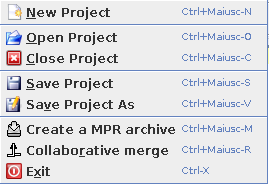
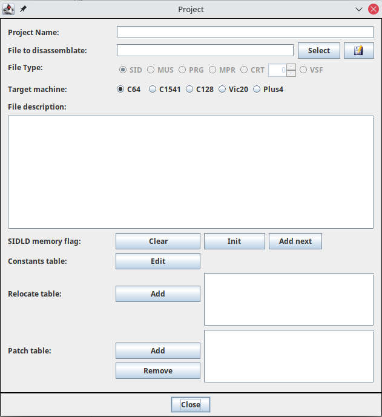

JC64dis File menu
The file menu is dedicated to the project, and so have many voices:

New project
To use the disassembler it is necessary to be inside a project, so creating a new one is the fist step to do.

The project windows gives you the ability to insert:
- Project name: a name to give to the project
- File to disassemblate: it let you choose the file that you want to disassemblate. Onve done, you will see the type (SID, MUS, PRG) detected and some information extracted from the file
- SIDLD memory flags: this file were generated by some modified version of SidLength Detector wrote by Michael Schwendt and that myself patched into libsidplay in order to create such memory dump.
The idea were simple: let play a tune of a SID and collect if a given address is of a code or a data or never utilizated. With those flags you can achieve two important step:
- Make at 0 to all the binary locations in SID files not used and being sure that the tune still play correctly. That file can be then compressed more better and I use a lot for saving byte in 4KB/16KB competition!
- Let an disassembler to know if it has to decode a part as of data or as of code.
If you have such files you can simple use Add next button to add one by one. If you want to reset the situation, just use the clear
button or if you want a memory marked as all of code, than use init button.
Take present that you must apply the use of SIDLD with the function into the option menu
Open project
The function let you open a previusly salved project by read a .dis file.
Only one project can be opened at time, so you have to close the previous before opening a new one.
Close project
This function let you close the current project to work with a new one.
If you had not saved it, you can still save it bebore closing.
Save project
Save the project to the current .dis file being in use.
Save as project
Save the project to a .dis file that you choose or create as new.
Exit
This exit the application. Note that you cannot exit from the application using the X icon (to prevent you lose your works by a wrong click)